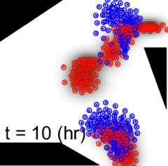

Information Value in Nonparametric Dirichlet-Process Gaussian-Process (DPGP) Mixture Models
H. Wei, W. Lu, P. Zhu, S. Ferrari, M. Liu, R. H. Klein, S. Omidshafiei, J. P. How
Automatica, 2016
Abstract
This paper presents tractable information value functions for Dirichlet-process Gaussian-process (DPGP) mixture models obtained via collocation methods and Monte Carlo integration. Quantifying information value in tractable closed form is key to solving control and estimation problems for autonomous information-gathering systems. The properties of the proposed value functions are analyzed and then demonstrated by planning sensor measurements so as to minimize the uncertainty in DPGP target models that are learned incrementally over time.
Keywords
information theory
Bayesian nonparametric
Gaussian process
Dirichlet process
@article{Wei16Automatica,
title = "Information value in nonparametric {D}irichlet-process {G}aussian-process ({DPGP}) mixture models",
journal = "Automatica ",
volume = "74",
pages = "360 - 368",
year = "2016",
issn = "0005-1098",
author = "Hongchuan Wei and Wenjie Lu and Pingping Zhu and Silvia Ferrari and Miao Liu and Robert H. Klein and Shayegan Omidshafiei and Jonathan P. How",
}
A Geometric Transversals Approach to Sensor Motion Planning for Tracking Maneuvering Targets
Hongchuan Wei, Silvia Ferrari
IEEE Transactions on Automatic Control, 2015
Abstract
This paper presents a geometric transversals approach to the optimization of the detection probability subject to sensor kinodynamic constraints. Using the proposed detection probability function, the necessary conditions for optimality can be derived using calculus of variations, and solved numerically using a variational iteration method (VIM).
Keywords
nonlinear optimization
sensor network
target tracking
@article{wei15TAC,
title={A geometric transversals approach to sensor motion planning for tracking maneuvering targets},
author={Wei, Hongchuan and Ferrari, Silvia},
journal={IEEE Transactions on Automatic Control},
volume={60},
number={10},
pages={2773--2778},
year={2015},
publisher={IEEE}
}
A Geometric Transversals Approach to Analyzing the Probability of Track Detection for Maneuvering Targets
Hongchuan Wei, Silvia Ferrari
IEEE Transactions on Computers, 2014
Abstract
This paper presents a geometric transversals approach for representing the probability of track detection by multiple, distributed sensors, as a function of the Markov model transition probabilities. By this approach, the Markov parameters of maneuvering targets that may be detected by the sensors are represented by three-dimensional cones that are finitely
generated by the sensors fields-of-view in a spatiotemporal Euclidian space. Then, the problem of deploying a sensor network for the
purpose of maximizing the expected number of target detections can be formulated as a nonlinear program that can be solved numerically
for the optimal sensor placement.
Keywords
nonlinear optimization
sensor network
target tracking
@article{wei14TC,
title={A geometric transversals approach to analyzing the probability of track detection for maneuvering targets},
author={Wei, Hongchuan and Ferrari, Silvia},
journal={IEEE Transactions on Computers},
volume={63},
number={11},
pages={2633--2646},
year={2014},
publisher={IEEE}
}

Distributed Optimal Control of Sensor Networks for Dynamic Target Tracking
G. Foderaro, P. Zhu, H. Wei, T. A. Wettergren, S. Ferrari
IEEE Transactions on Control of Network Systems, 2016
Abstract
This paper presents a distributed optimal control approach for managing omnidirectional sensor networks deployed to cooperatively track moving targets in a region of interest. The probability of cooperative track detection, also known as track coverage, can be shown to be an integral function of a probability density function representing the macroscopic sensor network state. Thus, a mobile sensor network deployed to detect moving targets can be viewed as a multiscale dynamical system in which a time-varying probability density function can be identified as a restriction operator, and optimized subject to macroscopic dynamics represented by the advection equation.
Keywords
nonlinear optimization
sensor network
target tracking
@article{foderaro16TCNS,
title={Distributed Optimal Control of Sensor Networks for Dynamic Target Tracking},
author={Foderaro, Greg and Zhu, Pingping and Wei, Hongchuan and Wettergren, Thomas A and Ferrari, Silvia},
journal={IEEE Transactions on Control of Network Systems},
year={2016},
publisher={IEEE}
}